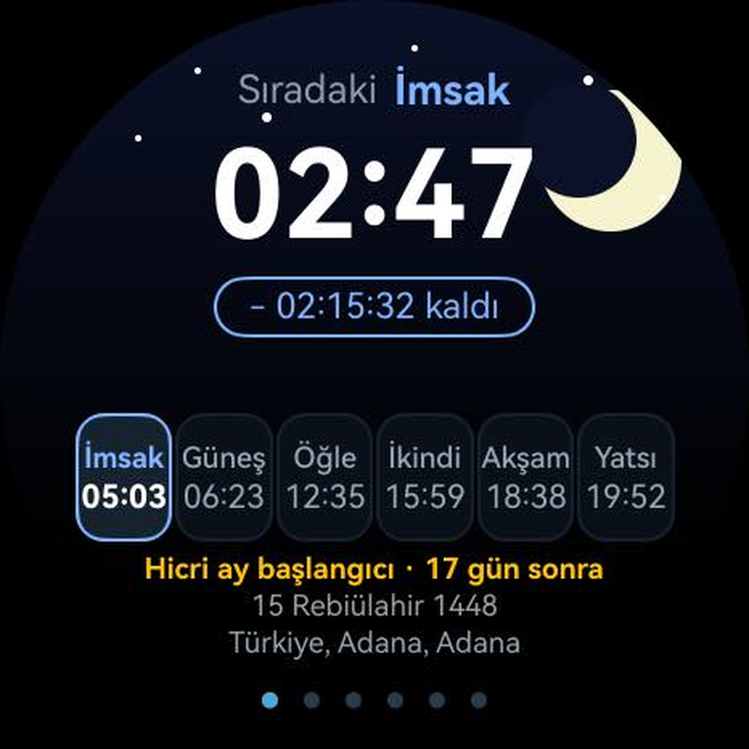
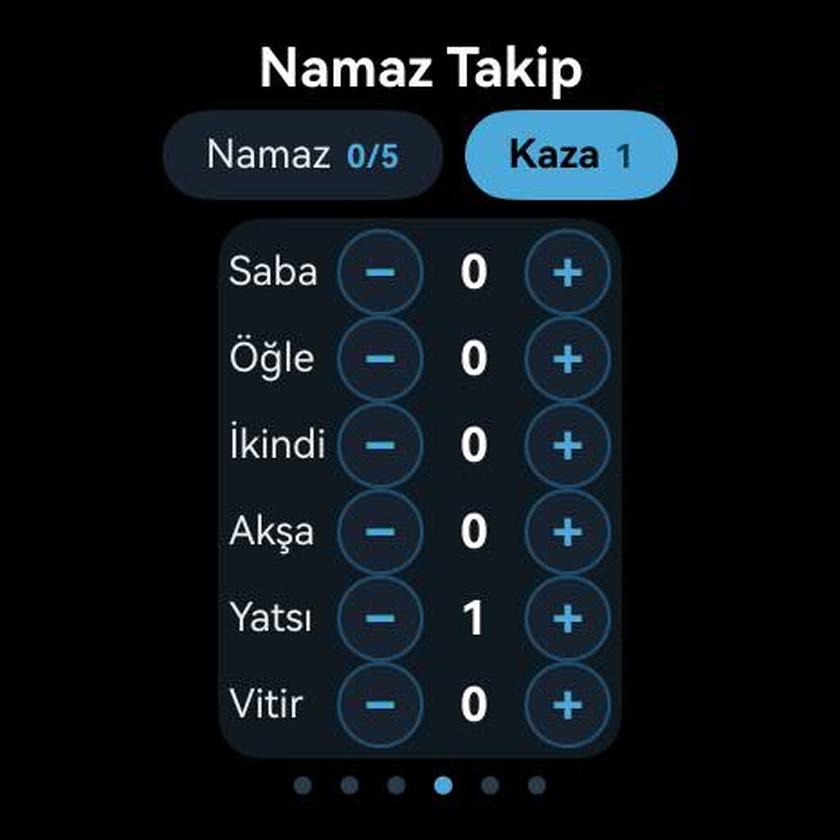
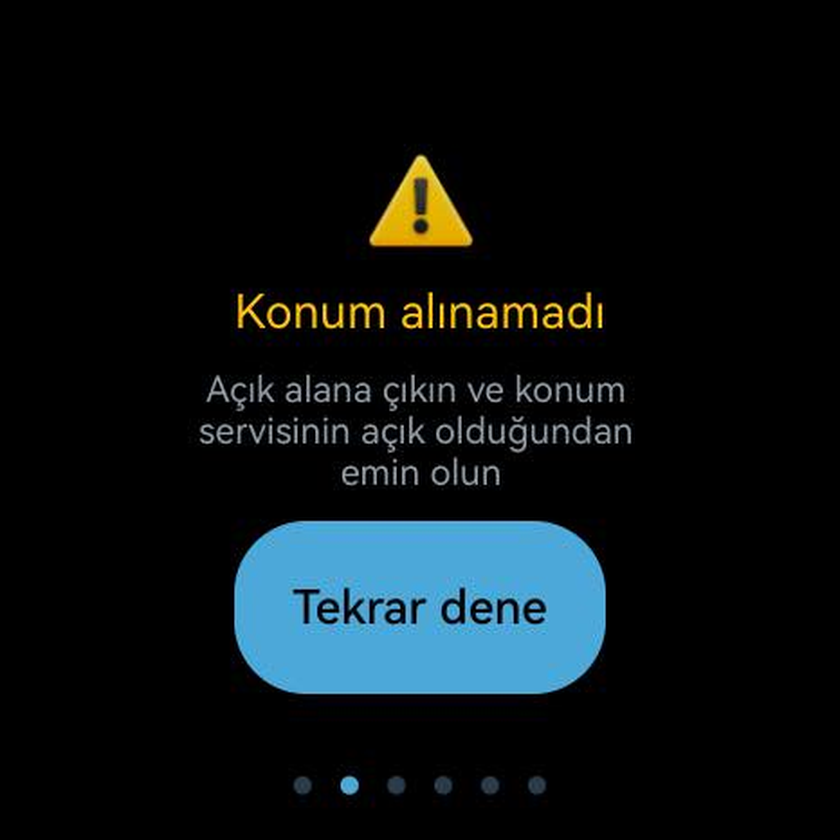
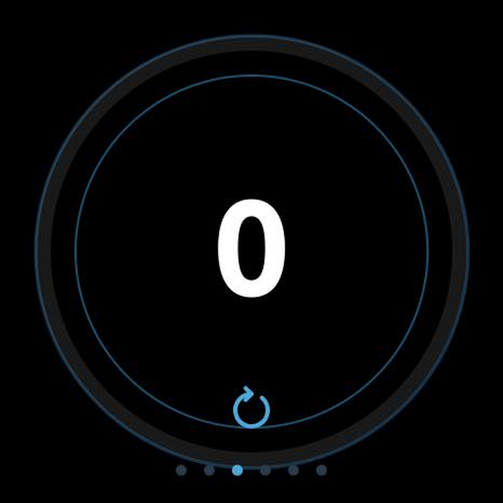
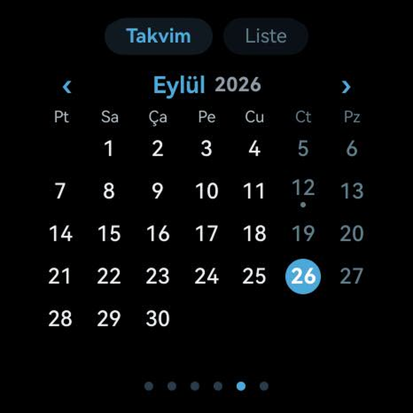
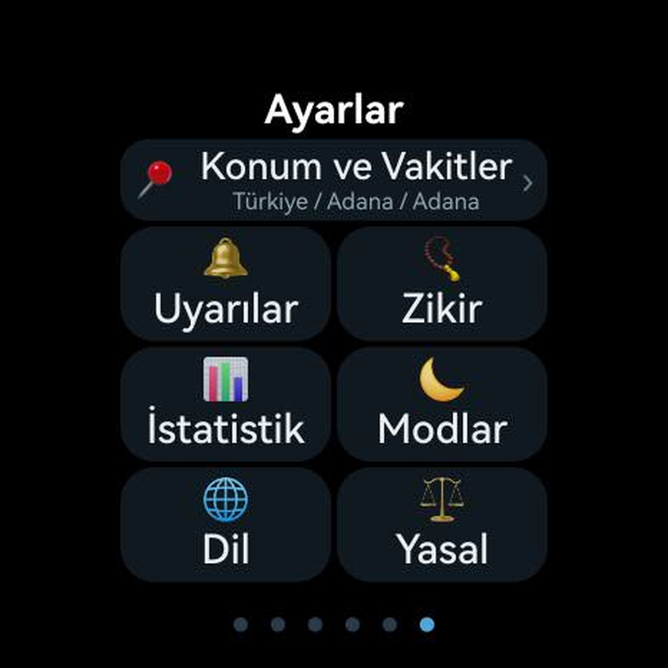

Diyanet takvimi esaslı vakitler, gerçek ezan sesleri, kıble pusulası ve zikirmatik — tek uygulamada, tamamen saatinizde.
Reklam yok, abonelik yok, hesap yok. Her şey cihazınızda çalışır.
Diyanet takvimini esas alan servisden bir yıllık vakitler tek dokunuşla cihaza önbelleklenir; internet olmadan kesintisiz çalışır.
Bir sonraki vakte kalan süre saniyesi saniyesine; dairesel ilerleme halkasıyla tek bakışta.
Sabah, öğle, ikindi, akşam ve yatsı için ayrı ezan kaydı; titreşim veya sessiz mod; erken uyarı.
Manyetometreyle Kâbe yönü ve uzaklık; kalibrasyon rehberi ile güvenilir gösterim.
33×3 tur, manuel hedef veya sonsuz mod; tur bitişinde güçlü titreşim, günlük hedef takibi.
Günlük namaz işaretleme, kaza defteri, haftalık/aylık istatistikler — hepsi cihazda.
Kadir, Regaib, Miraç, Berat ve bayramlar Diyanet takvimiyle; aylık görünüm ve hatırlatıcı bildirimler.
Türkçe'den Telugu'ya; Arapça'da RTL, Hintçe/Bengalce'de yerli rakamlar.
Gizlilik onayını verin; uygulama konumunuzu otomatik olarak sorar ve sizi şehir seçimine götürür.
Ülke → il → ilçe. Seçimle birlikte 365+ günlük vakitler kendiliğinden indirilir.
Ezan sesleri, kıble, zikirmatik ve mübarek gün bildirimleri — hepsi internet olmadan çalışır.






Kadir Gecesi, Regaib, Miraç, Berat, Ramazan ve Kurban Bayramı… Diyanet takvimine göre aylık görünümde işaretli; yaklaştıkça bileğinize bildirir.
“Namaz vakitleri tam, ezan sesi gerçekten geliyor. Telefonu evde bıraktım, saat tek başına çalışıyor.”
“Kıble pusulası çok net. Kabe mesafesini de gösteriyor, diğer uygulamayla aynı sonucu veriyor.”
“Mübarek gün bildirimleri sayesinde Regaib'i kaçırmadım. Arayüz de çok temiz.”
“Kaza defteri ve istatistikler tam aradığım şeydi. Veriler saatten çıkmıyor, güven veriyor.”
“Reklam yok, üyelik yok — kur, seç, çalıştır. Saat uygulamalarında ender dürüst paket.”
“Zikirmatikteki tur titreşimi mükemmel; hedefe ulaşınca gerçekten haber veriyor.”
Evet. Vakitler cihaza önbelleklenir; senkron sonrası her şey çevrimdışı çalışır.
HarmonyOS tabanlı Huawei Watch GT, Watch 3/4/5 ve Watch Ultimate serileri.
Hayır. Konum yalnızca cihazda hesaplama için kullanılır; hiçbir veri cihazdan çıkmaz. Reklam veya analiz SDK'sı yoktur.
Hayır. Uygulama tamamen bağımsız (standalone) çalışır.
Evet. Kerteriz hesabı büyük daire formülüyle yapılır — 0,1°'nin altında uyum.
Diyanet-calendar-based times, real adhan recordings, Qibla compass and tasbeeh — one app, entirely on your watch.
No ads, no subscription, no account. Everything runs on your device.
A full year of times from a Diyanet-calendar-based service, cached on the watch in one tap; works fully offline.
Time to the next prayer, second by second, with a circular progress ring.
Separate adhan recordings for Fajr, Dhuhr, Asr, Maghrib and Isha; vibration or silent; early warnings.
Kaaba direction and distance via the magnetometer, with calibration guidance.
33×3 cycles, manual target or endless mode; strong haptic on round completion, daily goals.
Daily prayer check-ins, missed-prayer ledger, weekly/monthly statistics — all on-device.
Laylat al-Qadr, Raghaib, Miraj, Baraah and Eids per the Diyanet calendar; monthly view and reminders.
From Turkish to Telugu; RTL Arabic, native digits in Hindi/Bengali and more.
Accept the privacy notice; the app asks for your location automatically and takes you to city selection.
Country → province → district. 365+ days of times download themselves right after you pick.
Adhan sounds, Qibla, tasbeeh and holy-day alerts — all working without internet.
Laylat al-Qadr, Raghaib, Miraj, Baraah, Ramadan and Eid al-Adha… marked in the monthly view per the Diyanet calendar and notified as they approach.
“Times are exact and the adhan actually plays. Left my phone at home — the watch works alone.”
“Qibla compass is sharp — even shows the distance to the Kaaba, matching other apps.”
“Holy-day alerts kept me from missing Raghaib. The interface is really clean.”
“The qada ledger and statistics are exactly what I wanted. Data never leaves the watch.”
“No ads, no sign-up — install, pick, done. A rare honest watch app.”
“The round-completion buzz in tasbeeh is perfect — it really tells you when you're done.”
Yes. Times are cached on the watch; after syncing, everything works offline.
HarmonyOS-based Huawei Watch GT, Watch 3/4/5 and Watch Ultimate series.
No. Location is used on-device for calculations only; nothing leaves the watch. No ad or analytics SDKs.
No. The app is fully standalone.
Yes. The bearing is calculated with the great-circle formula — accurate to within 0.1°.
أوقات وفق تقويم الرئاسة، تسجيلات أذان حقيقية، بوصلة القبلة والمسبحة — تطبيق واحد على ساعتك بالكامل.
بدون إعلانات أو اشتراك أو حساب. كل شيء يعمل على جهازك.
تُخزَّن أوقات سنة كاملة من خدمة تعتمد تقويم الرئاسة بنقرة واحدة؛ يعمل دون إنترنت.
الوقت المتبقي للصلاة التالية ثانية بثانية مع حلقة تقدم دائرية.
تسجيل أذان منفصل للصلوات الخمس؛ اهتزاز أو صمت وتنبيه مسبق.
اتجاه الكعبة والمسافة بمستشعر المغناطيسية مع إرشادات المعايرة.
33×3 تسبيحة أو هدف يدوي أو وضع لا نهائي؛ اهتزاز قوي عند إكمال الجولة.
تأشير الصلوات اليومية وسجل القضاء وإحصاءات أسبوعية وشهرية — داخل الجهاز.
ليلة القدر والرغائب والمعراج والبراعة والأعياد وفق تقويم الرئاسة؛ عرض شهري وتنبيهات.
من التركية إلى التيلوغوية؛ العربية RTL وأرقام محلية في الهندية والبنغالية.
وافق على إشعار الخصوصية؛ يطلب التطبيق موقعك تلقائيًا وينقلك إلى اختيار المدينة.
دولة → محافظة → منطقة. تُنزَّل أكثر من 365 يومًا من الأوقات فور الاختيار.
الأذان والقبلة والمسبحة وتنبيهات الأيام المباركة — كلها تعمل بدون إنترنت.
ليلة القدر والرغائب والمعراج والبراعة ورمضان وعيد الأضحى… معلَّمة في العرض الشهري وفق تقويم الرئاسة مع تنبيه عند الاقتراب.
«الأوقات دقيقة والأذان يرن فعلاً. تركت هاتفي في المنزل والساعة تعمل وحدها.»
«بوصلة القبلة دقيقة وتُظهر مسافة الكعبة، مطابقة لتطبيقات أخرى.»
«تنبيهات الأيام المباركة منعتني من فوات الرغائب. الواجهة نظيفة جدًا.»
«سجل القضاء والإحصاءات كل ما كنت أريده، والبيانات لا تغادر الساعة.»
«بدون إعلانات أو تسجيل — ثبّت واختر وانتهى. تطبيق ساعات نادر الصدق.»
«اهتزاز إكمال الجولة في المسبحة ممتاز — يُشعرك حقًا عند الانتهاء.»
نعم. تُخزَّن الأوقات على الساعة؛ بعد المزامنة يعمل كل شيء دون اتصال.
ساعات هواوي العاملة بنظام HarmonyOS: سلاسل Watch GT و3/4/5 وWatch Ultimate.
لا. يُستخدم الموقع داخل الجهاز للحساب فقط؛ لا شيء يخرج من الساعة. لا توجد مكتبات إعلانات أو تحليلات.
لا. التطبيق مستقل تماماً.
نعم. تُحسب البوصلة بدائرة العظمى — بفارق أقل من 0.1°.